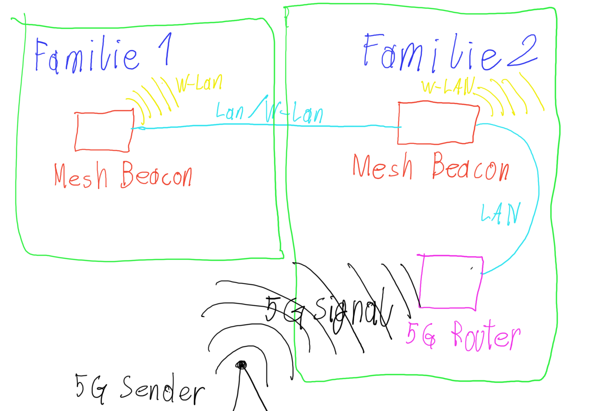
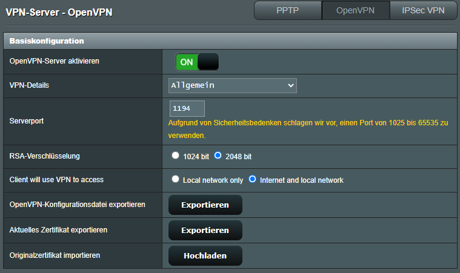

Hallo zusammen, ich versuche gerade Bekannte zu helfen, folgendes: Internet kommt über 5G zu einem Mesh-Router von Magenta, das Internet teilen sich 2 Familien, der Mesh-Router steht in Familie 1, die zweite Familie ist über einen Router mit dem Haupt-Mesh-Router per Kabel verbunden. Jetzt wäre ja der Wunsch in der zweiten Familie über VPN auf das Hausnetzwerk zugreifen zu können, wie mache ich das, muss ich VPN im ersten Router und im zweiten aktivieren und brauche ich 2 dynamischen IP-Adressen oder wie bekomme ich das hin, geht das überhaupt?
Also zwei Familien teilen sich einen Internetzugang (hier halt über 5G). Und ihr habt ein Mesh System von Magenta.
Bei einer Familie steht der Router sowie der Haupt-Mesh-Router (Familie 2) und bei der anderen der zweite Mesh Router (Familie 1).
Sofern der Betriebsmodus der Mesh Beacons nicht geändert wurde (standard wäre Bridge), sollten alle Geräte welche per Lan/W-Lan mit einem der Beacons oder dem Router verbunden sind untereinander erkennen können.
Jetzt will Familie 2 von außen/unterwegs auf das Netzwerk zugreifen können, habe ich das richtig verstanden?
Ich nehme mal an ihr hab den Huawei 5G CPE Pro 2. Dieser hat keinen VPN Server eingebaut, nur einen VPN Client. Und die Nokia Mesh Beacons haben weder VPN Server nicht Client. Um eine VPN-Verbindung ins Heimnetz aufzubauen ist ein zusätzliches Gerät nötig, welches als VPN Server fungiert. Dies kann z.B. ein entsprechender Router (nicht jeder ist geeignet), eine NAS, oder ein Raspberry Pi sein.
Wichtig ist, dass für den Zugriff von außen der Business APN am 5G Router hinterlegt ist (
Anleitung
).
LG NTM
PS: Hier ist meine Interpretation von deiner Beschreibung, wie das Netzwerk aussieht:

Bearbeitet
von NTM
tererecool
Familie 1 hat den Haupt-Mesh-Router, der zweite Router von Familie 2 ist nicht per Mesh verbunden, ist ein separater Router (mit VPN-Server Funktion) und auch nicht so gedacht/gewollt, dass Roaming zwischen den Familien geht (eventuell wäre das eh eine interessante Idee aber ich denke schon zu spät dafür)
Bearbeitet
von tererecool
NTM
Okay und was für ein Router ist bei Familie 2?
tererecool
vor 3 Minuten schrieb NTM:
Okay und was für ein Router ist bei Familie 2?
Asus RT-AX58U bei Familie 2. Und Familie 1 bekommt ja das Internet zuerst, deswegen die Frage ob das überhaupt möglich ist :S
Bearbeitet
von tererecool
NTM
vor 5 Minuten schrieb tererecool:
Asus RT-AX58U bei Familie 2. Und Familie 1 bekommt ja das Internet zuerst, deswegen die Frage ob das überhaupt möglich ist :S
Den VPN Server an sich könnte der Asus machen. Das Problem ist eher wie man zu dem VPN Server kommt. Im Idealfall hätte Asus es nämlich am liebsten, wenn der Router direkt am Modem hängt und das Modem die öffentliche IP-Adresse an den Asus Router weiterreicht (das wird Bridge-Mode, Modem Modus oder Single User genannt).
Also in diesem Fall sollte man folgendermaßen vorgehen:
Zuerst braucht der 5G Router eine öffentliche dynamische IP-Adresse mittels des Business APN (Anleitung oben verlinkt).
Dann braucht es eine Portweiterleitung vom 5G Router auf den Asus Router. Ich würde als VPN Server Lösung OpenVPN Empfehlen (hat Asus eingebaut). Für Open VPN wäre der Port 1194 weiterzuleiten (Standardport kann aber am Asus geändert werden), am besten gleich TCP und UDP. Vergebt für den Asus auch eine statische IP-Adresse damit sich diese nicht ändert. Sofern es sich bei dem 5G Router um den Huawei 5G CPE Pro 2 handelt sollte dies unter Erweitert -> Router -> DHCP in der Tabelle möglich sein
Als nächstes den VPN Server am Asus aktivieren. Dazu am Asus unter VPN -> VPN-Server -> OpenVPN den Schalter umlegen und wie gewünscht die Konfiguration anpassen.
Nun ist die Frage, wohin sich die VPN Client Geräte verbinden sollen. Normalerweise würde dies per DynDNS (DDNS) geschehen. Ein DynDNS nimmt die öffentliche IP-Adresse (welche sich ändern kann) und verknüpft diese mit einer URL, welche sich nicht ändert und leichter zu merken ist. Allerdings funktioniert die Asus DynDNS Implementierung nur wenn die öffentliche IP direkt am Router anliegt, was in diesem Fall nicht möglich ist (und vom 5G Router nicht unterstützt). Es kann zwar bei der Konfiguration des OpenVPN Client die aktuelle IP-Adresse des Anschlusses eingetragen werden, nachdem sich diese aber ändern ist dies unpraktisch. Am Huawei 5G CPE Pro 2 sollte es unter Erweitert -> Router -> DDNS die Möglichkeit geben einen DynDNS Dienst zu konfigurieren. Von no-ip gibt es auch eine kostenlose Variante, wobei der Account alle 30 Tage bestätigt werden muss (Account erstellen:
https://www.noip.com/
).
Nun kann die OpenVPN Konfigurationsdatei vom Asus Router für die Client Geräte exportiert werden. Allerdings muss in der Datei nun die am Huawei konfigurierte DynDNS Adresse eingetragen werden. Öffne die Datei dazu mit einem Textbearbeitungsprogram (z.B. Editor) und ersetze die IP-Adresse in der ersten Zeile durch die DynDNS URL (ohne http/https oder www davor).
Nun kann die Datei in der OpenVPN App auf einem Client Gerät importiert werden. Der Standard VPN User ist außerdem derselbe mit dem man sich beim Router einloggt.
Ich hoffe das hilft etwas weiter.
tererecool
Wir probieren es am We. aus, mal schauen, sieht sehr kompliziert aus.
tererecool
So, ich bin erst jetzt dazugekommen es zu probieren und folgende Hürden gibt es:
1. "Zuerst braucht der 5G Router eine öffentliche dynamische IP-Adresse mittels des Business APN (Anleitung oben verlinkt)." Ist es damit wirklich getan und ist das Ergebiss überprüfbar? Sollte ich z.B. nun aus einem extern PC einen Ping senden können und eine Antwort bekommen? Antwort auf Ping bekomme ich aktuell nämlich nicht. In der ersten Antwort von Rexalius2000 ist ein Link verlinkt wo die Rede davon ist, dass man eine öffentliche IP eig. zuerst beantragen muss, war das vielleicht früher der Fall und jetzt nicht mehr, oder warum behaupten dies einige?
2. "Dann braucht es eine Portweiterleitung vom 5G Router auf den Asus Router." Wie geht das? Das Modem ist das
H122-373 (
Huawei 5G CPE Pro 2
).
Ich sehe in den Menüpunkten nichts mit Port-forwarding.
3. "Vergebt für den Asus auch eine statische IP-Adresse"
Das komische dabei war, in der Liste von Geräten habe ich eine MAC-Adresse ausgewählt wo ich glaube, dass diese die vom Router in Familie 2 ist, da wo der VPN-Server laufen sollte. Auf der rechten Seite stand "Mein Gerät" ist diese Bezeichnung bekannt?, kommt das vom Modem selbst oder hast eine Ahnung wo das herkommen kann?, wir waren verwirrt warum nur dieser eine Listeneintrag "Mein Gerät" daneben hat.
4. "OpenVPN den Schalter umlegen und wie gewünscht die Konfiguration anpassen." Reicht die default-config oder braucht man normalerweise etwas unter "Erweitert" ?
5. "Am Huawei 5G CPE Pro 2 sollte es unter Erweitert -> Router -> DDNS die Möglichkeit geben einen DynDNS Dienst zu konfigurieren."
Wenn man dyndns googelt erscheinen mehrere Einträge und das Magenta-Modem zeigt nur DynDNS
.org
und NoIp, heißt das wirklich, dass nur dyndsn.org unterstützt wird und sowas wie dyndns
.de
nicht? dyndns.de ist nämlich kostenlos, .org nicht.
Jedenfalls haben wir eine Domäne auf dyndns.de angelegt, wie kann dieser Dienst die eigene IP-Adresse eig. wissen? Bin voll verwirrt wie das gehen sollte. Ich habe einen Ping an die angelegte Domäne gesendet und es kam keine Antwort, die angezeigte IP stimmt aber mit der die erscheint wenn ich "my-ip" im Browser suche überein.
NTM
zu 1.
vor 1 Stunde schrieb tererecool:
"Zuerst braucht der 5G Router eine öffentliche dynamische IP-Adresse mittels des Business APN (Anleitung oben verlinkt)." Ist es damit wirklich getan und ist das Ergebiss überprüfbar?
Ja damit sollte es wirklich getan sein. Wenn die IP-Adresse im Router Menü unter Erweitert -> System -> Geräteinformationen -> WAN-IP-Adresse gleich ist wie auf bei
Google nach "whats my ip" suchst
.
In dem von
@Rexalius2000
verlinken Thread geht es um einen Coax-Kabel Anschluss und nicht um Mobilfunkt. Das sind zwei verschiedene Themen.
zu 2.
vor 2 Stunden schrieb tererecool:
Ich sehe in den Menüpunkten nichts mit Port-forwarding.
Gut das heißt hier Virtueller Server. Ist zu finden unter Erweitert -> Sicherheit -> Virtueller Server
zu 3.
vor 2 Stunden schrieb tererecool:
Das komische dabei war, in der Liste von Geräten habe ich eine MAC-Adresse ausgewählt wo ich glaube, dass diese die vom Router in Familie 2 ist, da wo der VPN-Server laufen sollte. Auf der rechten Seite stand "Mein Gerät" ist diese Bezeichnung bekannt?, kommt das vom Modem selbst oder hast eine Ahnung wo das herkommen kann?, wir waren verwirrt warum nur dieser eine Listeneintrag "Mein Gerät" daneben hat.
Der Asus gibt seinen Namen nicht nach "außen" über den WAN Port mit (macht meiner auch nicht).
Es muss aber wohl irgendetwas im Namensfeld eingetragen sein, deswegen wird dann halt "Mein Gerät" eingetragen.
Die MAC Adresse des WAN Port vom Asus steht auch unten am weißen Aufkleber.
zu 4.
vor 2 Stunden schrieb tererecool:
"OpenVPN den Schalter umlegen und wie gewünscht die Konfiguration anpassen." Reicht die default-config oder braucht man normalerweise etwas unter "Erweitert" ?
Normal reicht die Standardkonfiguration. Ich habe nichts unter erweitert angepasst.
Hier meine Config:

zu 5.
vor 2 Stunden schrieb tererecool:
"Am Huawei 5G CPE Pro 2 sollte es unter Erweitert -> Router -> DDNS die Möglichkeit geben einen DynDNS Dienst zu konfigurieren."
Wenn man dyndns googelt erscheinen mehrere Einträge und das Magenta-Modem zeigt nur DynDNS
.org
und NoIp, heißt das wirklich, dass nur dyndsn.org unterstützt wird und sowas wie
dyndns
.de
nicht? dyndns.de ist nämlich kostenlos, .org nicht.
Nur die im Webinterface werden vom Huawei unterstützt.
Du meinst wohl ddnss.de nicht dyndns.de, oder?
Mehr Anbieter wären nur mit zusätzlicher Hardware möglich. Falls eine NAS vorhanden ist, kann auch diese wahrscheinlich auch als DynDNS Client fungieren. Ansonsten könnte es auch mit einem Raspberry Pi ungesetzt werden.
Von ddnss.de gäbe es auch einen Windows Client, sollte bei euch ein Windows Gerät durchgehend im Betrieb sein.
https://ddnss.de/info.php
-> DDNS-Service Updater
vor 3 Stunden schrieb tererecool:
Jedenfalls haben wir eine Domäne auf dyndns.de angelegt, wie kann dieser Dienst die eigene IP-Adresse eig. wissen? Bin voll verwirrt wie das gehen sollte. Ich habe einen Ping an die angelegte Domäne gesendet und es kam keine Antwort, die angezeigte IP stimmt aber mit der die erscheint wenn ich "my-ip" im Browser suche überein.
Indem das Gerät meldet, diese IP gehört diesem User und zu der Domäne.
Eigentlich sollte der Dienst so gar nicht wissen welche IP zu der Domäne gehört, außer er hat sich mal die Adresse, von welcher aus die Registrierung vorgenommen wurde, gemerkt.
tererecool
Dankesehr @NTM, das hilft schon enorm weiter, ich schaue am Abend wieder weiter.
"Allerdings funktioniert die Asus DynDNS Implementierung nur wenn die öffentliche IP direkt am Router anliegt, was in diesem Fall nicht möglich ist"
In welchem Fall würde die IP direkt am Router liegen? Man braucht doch immer ein Moden davor?
NTM
vor 3 Stunden schrieb tererecool:
"Allerdings funktioniert die Asus DynDNS Implementierung nur wenn die öffentliche IP direkt am Router anliegt, was in diesem Fall nicht möglich ist"
In welchem Fall würde die IP direkt am Router liegen? Man braucht doch immer ein Moden davor?
Ja, allerdings haben einige (aber nicht alle) 5G/4G/DSL/Coax-Router einen so genannten Bridge Mode (heißt je nach Hersteller nicht unbedingt Bridge Mode). Mit dem Bridge Mode wird die öffentliche IP an den dahinter angeschlossenen Router weitergereicht.
Da die öffentliche IP dann an dem nachgeschalteten Router anliegt müssen alle anderen Geräte im Netzwerk an diesen Router angeschlossen werden. In diesem Fall würde dies aber nichts bringen, da der Asus direkt hinter dem Huawei hängen müsste und am Asus dann das Mesh und alle weiteren Endgeräte angeschlossen werden müssten.
Leider wird so ein Bridge Modus aber von allen Mobilfunkroutern, welche Magenta ausgibt, nicht unterstützt.
tererecool
Für VPN musste ich ja das eine APN-Profil am Modem hinzufügen, dieses Profil sollte nicht das default-Profil sein, oder? Ich habe nämlich unabsichtlich beim anlegen des Profil die Checkbox default ausgewählt und weiß jetzt nicht mehr welches das default normalerweise sein sollte, es gibt das standard internet-t-mobile.at und ein zweites "homenet". Macht es einen Unterschied welches Profil das default ist?
tererecool
Das ist eine Geburt!
Schon viele Hürden gelöst aber die Verbindung klappt noch nicht.
- Öffentlich IP haben wir, fängt mit 40 an
- DDNS von no-IP am Modem eingetragen und "online"
- Asus Router KEIN DDNS aktiv
- Asus Router hat eine statische IP vom DHCP-Server
- Asus Router OpenVPN aktiv mit angelegtem user + pass, von der config nur RSA von 1024 auf 2048bits gewechselt
- Config file mit domäne von no-IP ohne http/s und mit Port am Ende
- Auf iOS wird die Verbindung eine Zeit versucht und dann schlägt es fehl.
- Das einzige wo ich mir unsicher bin ist ob das Port-Forwarding stimmt:
Liste virtuelle Server:
Name: XY
WAN-Port: 1194-1194
LAN-IP-Adresse 192.168.8.60 (ist ja die statische vom Asus Router)
Lan-Port: 1194-1194
Protokoll: TCP/UDP
Status: toggle blau nach rechts.
Sieht das richtig aus? Ich weiß jetzt nicht wo ich nach dem Problem suchen sollte, scheint alles richtig konfiguriert zu sein. Kann es vielleicht sein weil das Smartphone wo die VPN-Verbindung startet im WLAN hängt? oder sollte dies nichts ausmachen?
NTM
vor 15 Minuten schrieb tererecool:
Kann es vielleicht sein weil das Smartphone wo die VPN-Verbindung startet im WLAN hängt? oder sollte dies nichts ausmachen?
Ja bitte wirklich von außen testen. Also das Smartphone direkt mit dem Mobilfunknetz verbinden oder mit einem W-Lan eines anderen Internet-Anschluss.
Es kann nämlich gut sein, dass der Huawei 5G CPE Pro2 kein Reverse DNS Lookup kann.
tererecool
Ok, das können wir erst morgen wieder ausprobieren, aber eig. weiß nicht ob das Sinn macht, wäre komisch, stellt dir vor du hast eine App um Geräte deines Hauses zu steuern, verwendest dafür VPN um aus der Entfernung die Steuerungen zu bedienen, dann bist daheim und musst extra VPN ausschalten, du kannst nicht automatisieren, dass diese App nur bei Bedarf VPN verwendet :S
Bearbeitet
von tererecool
tererecool
@NTM
hat leider nicht funktioniert, ich werde heute mal VPn direkt aufm Modem einrichten und es mit einem Windows Client ausprobieren, muss herausfinden wo es hackt.
NTM
vor 1 Stunde schrieb tererecool:
NTM
hat leider nicht funktioniert, ich werde heute mal VPn direkt aufm Modem einrichten und es mit einem Windows Client ausprobieren, muss herausfinden wo es hackt.
Hat der 5G CPE Pro 2 wirklich eine VPN Server Funktion?
Ein VPN Client sollte vorhanden sein, aber wenn er auch als VPN Server eingesetzt werden kann, wäre das eine positive Überraschung.
tererecool
Nein, eig. nicht. Jetzt konnte ich das Problem finden, das angelegte APN Profil war nicht als default markiert deswegen war die IP gar nicht mehr öffentlich, weiß noch nicht welche Auswirkung dies auf die anderen angelegten Profile haben könnte.
Bearbeitet
von tererecool
tererecool
vor 18 Stunden schrieb NTM:
Ja bitte wirklich von außen testen. Also das Smartphone direkt mit dem Mobilfunknetz verbinden oder mit einem W-Lan eines anderen Internet-Anschluss.
Es kann nämlich gut sein, dass der Huawei 5G CPE Pro2 kein Reverse DNS Lookup kann.
Zumindest von außen geht es, im WLAN nicht.
NTM
vor 21 Minuten schrieb tererecool:
weiß noch nicht welche Auswirkung dies auf die anderen angelegten Profile haben könnte.
Wichtig ist nur das Profil für die öffentliche IP-Adresse, die anderen kannst du ignorieren.
vor 20 Minuten schrieb tererecool:
Zumindest von außen geht es, im WLAN nicht.
Super das es endlich funktioniert!
Von innen ist die VPN Verbindung ja auch eigentlich nicht nötig.
Ich würde mich nicht immer mit meinem VPN Server verbinden, sondern nur wenn es nötig ist, da ansonsten die Datenübertragungsraten am Handy vom heimischen Internet-Anschluss abhängig sind, auch wenn man unterwegs ist.
Mit einem Bridge Modus fähigen Gerät könnte man dies umgehen, aber 5G Router, die einen Bridge Mode haben, sind noch ziemlich teuer.
Bearbeitet
von NTM
tererecool
Seit heute geht die Verbindung plötzlich nicht mehr
{kind=link}